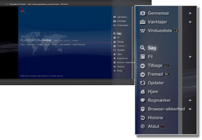

Netværk > Grundlæggende betjening af internetbrowseren
Grundlæggende betjening af internetbrowseren
Visning af skærmen

(1) |
Sidetitel |
|---|---|
(2) |
Sideadresse |
(3) |
SSL-ikon |
(4) |
Optaget-ikon |
(5) |
Ikon for browsersikkerhed |
(6) |
Link-adresse |
(7) |
Markør |
Rullemetoder
| Retningsknapper | Flyt markøren til et link. |
|---|---|
 -knappen + retningstasten -knappen + retningstasten |
Rul side for side. |
| Højre pind | Rul i den ønskede retning. |
Brug af menuen
Ved tryk på  -knappen vises menuen, hvor der kan foretages en række handlinger og indstillinger. Menuen kan vises og skjules ved at trykke på -knappen. Menupunkterne er forskellige i browsertilstand og i vinduestilstand.
-knappen vises menuen, hvor der kan foretages en række handlinger og indstillinger. Menuen kan vises og skjules ved at trykke på -knappen. Menupunkterne er forskellige i browsertilstand og i vinduestilstand.

Indtast en adresse (URL)
Når du trykker på START-tasten, vises et tastatur til indtastning af adresse. Hvis du vælger  , når du har indtastet adressen, lukkes tastaturet, og siden for den indtastede adresse vises.
, når du har indtastet adressen, lukkes tastaturet, og siden for den indtastede adresse vises.
Kopiering af tekst
Du kan kopiere tekst fra en side i internetbrowseren.
1. |
Brug den venstre pind til at flytte markøren til den tekst, der skal kopieres, og tryk derefter på |
|---|---|
2. |
Hold |
3. |
Slip |
4. |
Vælg [Kopier] i den viste menu. |
Tips
- Du kan indsætte den kopierede tekst med [Sæt ind] på skærmtastaturet.
- Hvis du vælger [Søg] i trin 4, kan du lave en søgning på internettet med den kopierede tekst som søgestreng.
Udskrivning af webside
For at anvende denne funktion skal printeren først indstilles ved at vælge  (Indstillinger) > [Printerindstillinger] > [Printervalg].
(Indstillinger) > [Printerindstillinger] > [Printervalg].
1. |
Åbn den webside, som du vil udskrive, og tryk så på knappen |
|---|---|
2. |
Vælg [Fil] > [Udskriv denne skærm]. |
3. |
Kontroller printerindstillingerne. |
4. |
Vælg [Udskriv]. |
Tip
Hvilke printere, der kan anvendes, varierer afhængigt af land eller region. For flere oplysninger henvises til SCEs hjemmeside for din region.
Åbning af flere vinduer
Der kan åbnes flere vinduer på én gang. Placer markøren over linket, tryk på  -knappen, og hold den nede, indtil linket åbnes i et andet vindue.
-knappen, og hold den nede, indtil linket åbnes i et andet vindue.